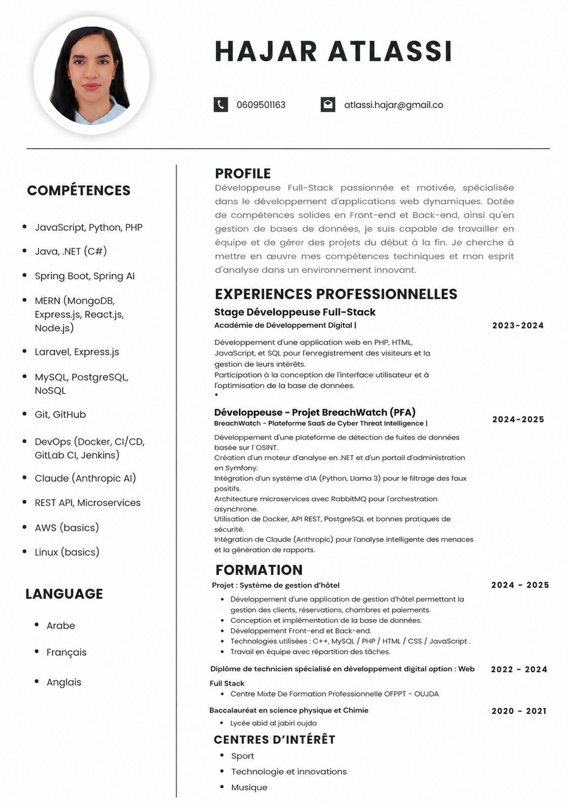

Langages
JavaScript · Python · PHP · Java · .NET (C#)
GÉNIE INFORMATIQUE · FULL-STACK DEVELOPMENT
Développeuse Full-Stack passionnée et motivée, spécialisée dans le développement d’applications web dynamiques. Compétences solides en Front-end, Back-end, bases de données, cybersécurité et solutions intégrant l’intelligence artificielle.
Développeuse Full-Stack passionnée et motivée, spécialisée dans le développement d’applications web dynamiques.
Dotée de compétences solides en Front-end et Back-end, ainsi qu’en gestion de bases de données, je suis capable de travailler en équipe et de gérer des projets du début à la fin.
Je cherche à mettre en œuvre mes compétences techniques et mon esprit d’analyse dans un environnement innovant.
JavaScript · Python · PHP · Java · .NET (C#)
Spring Boot · Spring AI · MERN · Laravel · Express.js
REST API · Microservices
MySQL · PostgreSQL · NoSQL
Docker · CI/CD · GitLab CI · Jenkins
Git · GitHub
Claude (Anthropic AI)
AWS (basics) · Linux (basics)
Quelques projets académiques, professionnels et collaboratifs mettant en avant mes compétences.
Plateforme de détection de fuites de données basée sur l’OSINT. Le projet comprend un moteur d’analyse en .NET, un portail d’administration en Symfony et un système d’intelligence artificielle pour réduire les faux positifs.
Application de gestion d’hôtel permettant la gestion des clients, réservations, chambres et paiements.
Développement d’une application web destinée à l’enregistrement des visiteurs et à la gestion de leurs intérêts.
Conception et développement d’une plateforme web moderne pour Tagine City, basée sur Next.js, React et TypeScript.
BreachWatch — Plateforme SaaS de Cyber Threat Intelligence
Développement d’une plateforme de détection de fuites de données basée sur l’OSINT.
Développement d’un moteur d’analyse en .NET et d’un portail d’administration en Symfony.
Intégration d’un système d’IA en Python avec Llama 3 pour le filtrage des faux positifs.
Architecture microservices avec RabbitMQ pour l’orchestration asynchrone.
Docker, REST API, PostgreSQL et bonnes pratiques de sécurité.
Intégration de Claude (Anthropic) pour l’analyse intelligente des menaces et la génération de rapports.
Académie de Développement Digital I
Développement d’une application web en PHP, HTML, JavaScript et SQL pour l’enregistrement des visiteurs et la gestion de leurs intérêts.
Participation à la conception de l’interface utilisateur et à l’optimisation de la base de données.
Centre Mixte de Formation Professionnelle OFPPT — Oujda
Lycée Abid Al Jabiri — Oujda
Arabe · Français · Anglais
Sport · Technologie et innovations · Musique
Retrouvez ici mon CV complet avec mon profil, mes compétences, mes expériences professionnelles, ma formation, mes langues et mes centres d’intérêt.

0609501163 · Oujda, Maroc